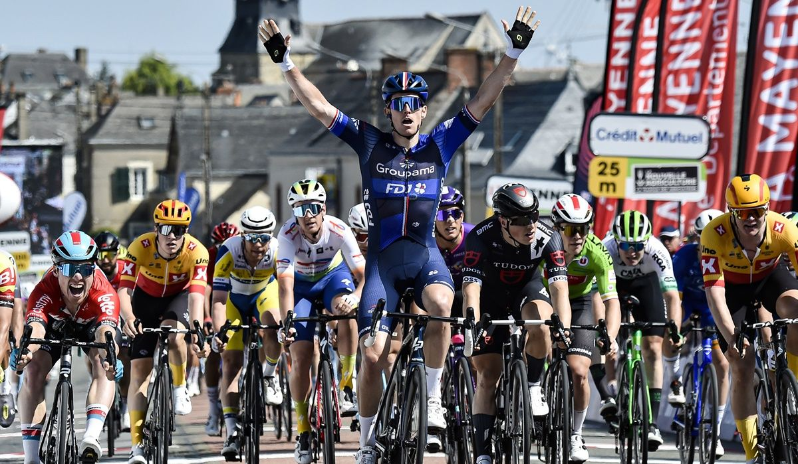

Ciclismo

El ciclismo es un deporte y una forma de transporte que utiliza bicicletas para desplazarse y competir. Es una actividad popular en todo el mundo y ofrece una variedad de beneficios físicos, mentales y ambientales.
Tipos de ciclismo
Existen varios tipos de ciclismo, cada uno con sus propias características y propósitos:
-
Ciclismo de carretera: Se practica en carreteras pavimentadas y se enfoca en la velocidad y la resistencia. Los ciclistas suelen utilizar bicicletas de carretera ligeras y aerodinámicas.
-
Ciclismo de montaña: Se realiza en senderos y terrenos accidentados. Los ciclistas utilizan bicicletas de montaña diseñadas con suspensiones y neumáticos especiales para hacer frente a los obstáculos del terreno.
-
Ciclismo urbano: Implica el uso de bicicletas como medio de transporte en entornos urbanos. Es una alternativa sostenible y saludable para evitar el tráfico y contribuir a la reducción de la contaminación.
-
Ciclismo de pista: Se lleva a cabo en una pista especializada, generalmente en un velódromo. Incluye diferentes modalidades como la velocidad, el keirin y la persecución.
-
Ciclismo de BMX: Se caracteriza por bicicletas pequeñas y robustas utilizadas para realizar acrobacias y saltos en pistas especiales.
Beneficios del ciclismo
El ciclismo ofrece una amplia gama de beneficios:
-
Salud física: Montar en bicicleta es una excelente forma de ejercicio cardiovascular que fortalece el corazón, los pulmones y los músculos. Ayuda a mejorar la resistencia, la fuerza y el equilibrio. También es de bajo impacto, lo que reduce el estrés en las articulaciones.
-
Bienestar mental: El ciclismo al aire libre proporciona una sensación de libertad y conexión con la naturaleza. Además, el ejercicio físico libera endorfinas, mejorando el estado de ánimo y reduciendo el estrés y la ansiedad.
-
Transporte sostenible: Utilizar la bicicleta como medio de transporte contribuye a la reducción de la contaminación atmosférica y acústica, así como a la disminución del tráfico y los problemas de estacionamiento en las ciudades.
-
Comunidad y socialización: El ciclismo fomenta la participación en grupos y clubes, lo que brinda la oportunidad de conocer a otras personas con intereses similares. También se organizan eventos y competencias que reúnen a ciclistas de todas partes.
Equipamiento básico del ciclista
-
Bicicleta: El tipo de bicicleta dependerá del tipo de ciclismo que se practique. Las bicicletas de carretera, de montaña, urbanas y BMX son algunas de las opciones disponibles.
-
Casco: Es esencial para la seguridad del ciclista, ya que protege la cabeza en caso de caídas o colisiones.
-
Ropa adecuada: Se recomienda utilizar ropa cómoda y transpirable, como maillots